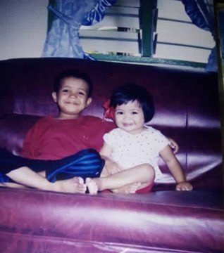
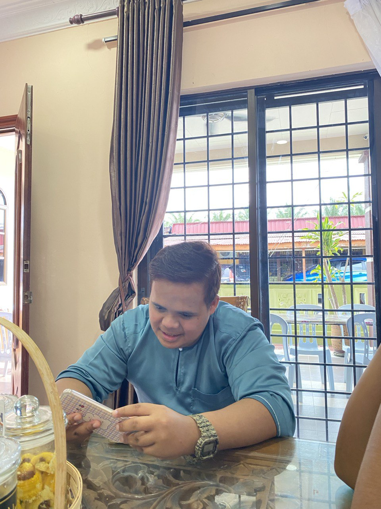
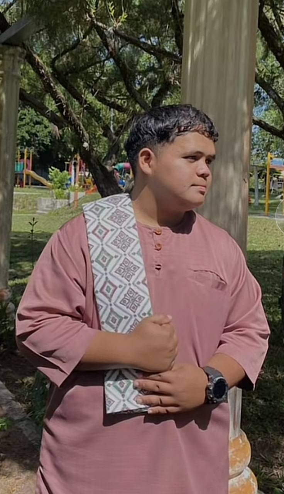

|

|

|
Angah ˶ᵔ ᵕ ᵔ˶
My brother, a quiet giant with a heart of gold, has just completed his diploma in Science Technology. Though lured by the promise of further studies in Germany, his loyalty lies closer to home. He chooses to stand by our father, his silent partner in the family business, their combined efforts ensuring our family's continued success.
He is not a man of many words, preferring the quiet company of a book or the warmth of a shared meal. Yet, his actions speak volumes. He is the one who surprises me with visits to aesthetic cafes, indulging my cravings for my favorite treats. He ensures I never feel inferior, offering a helping hand with chores without a word of complaint.
He once loved deeply, only to be betrayed. Instead of succumbing to bitterness, he chose to heal his heart through hard work and dedication. His silence masks a strength that few possess, a wellspring of compassion and generosity. He rarely seeks recognition, yet he never hesitates to shower his siblings with gifts, fulfilling our needs before they are even uttered.
My brother is a walking paradox - quiet yet powerful, reserved yet generous. He is the silent guardian of our family, his unwavering loyalty and strength a constant source of comfort and security. Once he opens his mouth, his words carry the weight of a thousand unspoken emotions, leaving no room for doubt or question. He may not be the loudest amongst us, but his presence speaks louder than any words ever could.